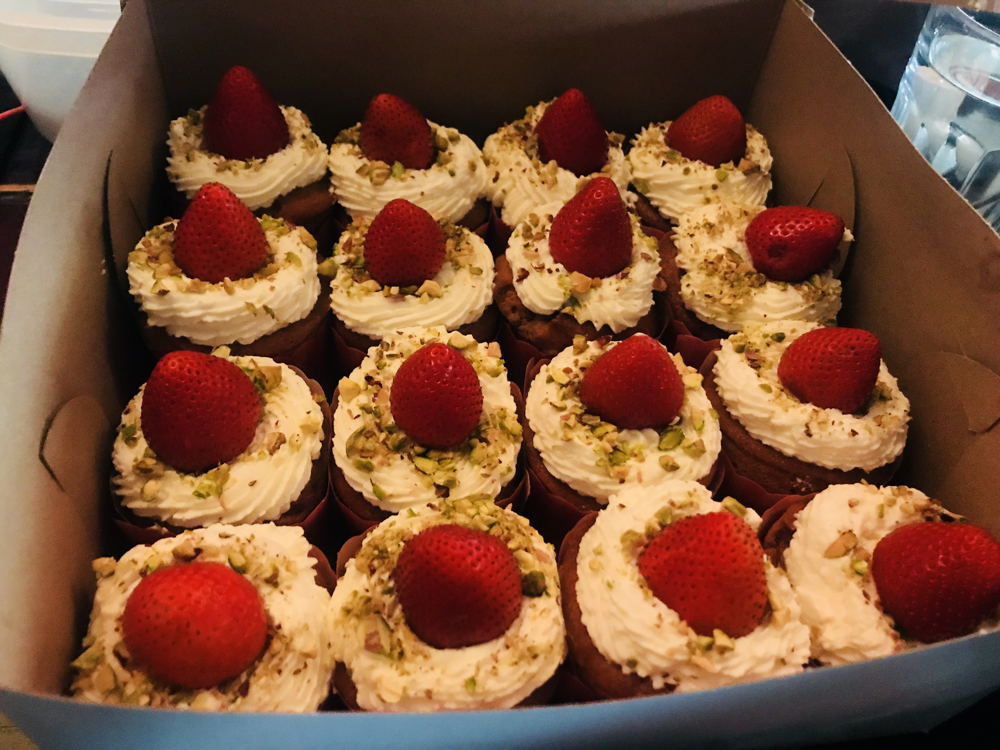
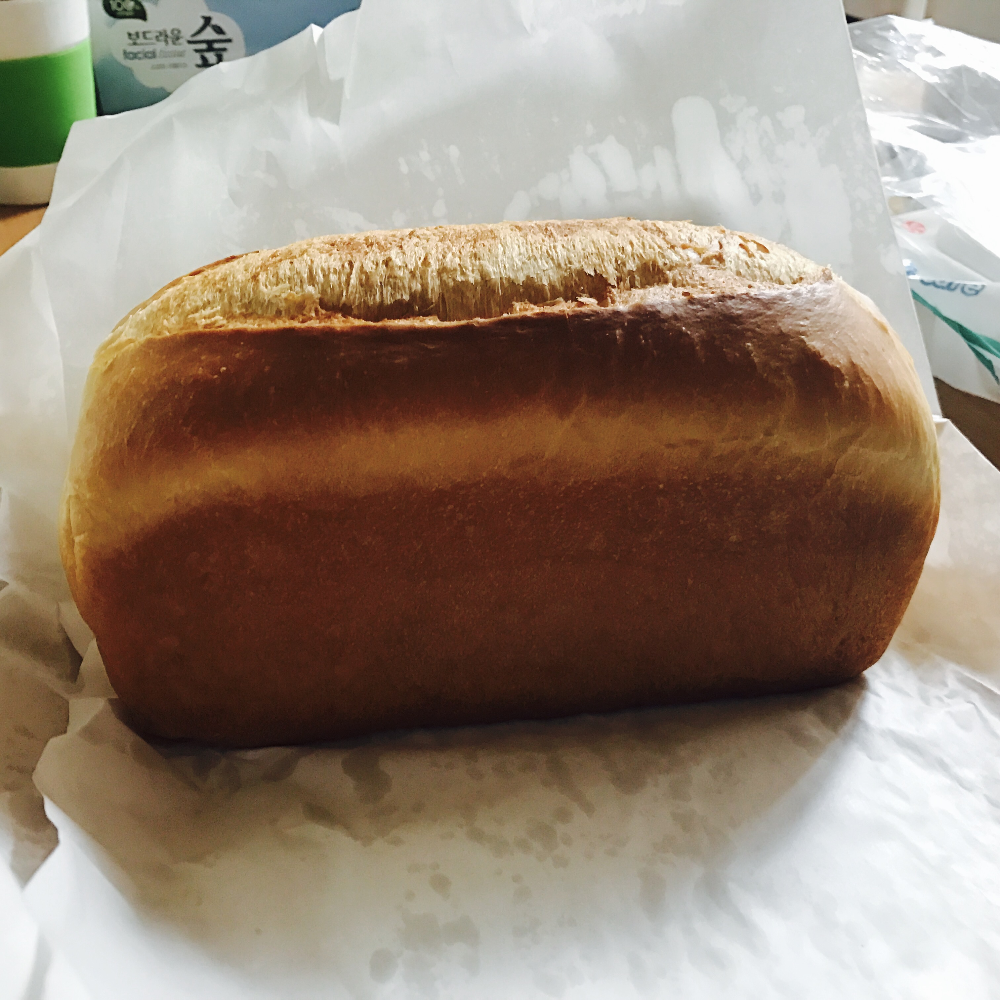

My Baking
I was a baker before I turned to data science. Baking is a great skill to make gifts for those around me. From simple doughnuts to cakes, my kitchen is my creative space. Let me introduce my favorite recipes and baked goods that show my skills and creativity.
My Favorite Bakes
| Baked Good | Photo | Recipes |
|---|---|---|
| Sugar Donut |  |
Ingredients:
Mix ingredients, form into rings, and fry until golden brown. Coat in sugar while warm. |
| Pistachio Muffins |  |
Ingredients:
Combine ingredients, mix well, and bake in a preheated oven at 375°F (190°C) for 20–25 minutes. |
| Strawberry Cheesecake |  |
Ingredients:
Mix crumbs and butter, press into a pan for the crust. Blend cream cheese, sugar, and eggs, then pour over the crust. Swirl in strawberry puree and bake at 350°F (175°C) for 40–45 minutes. |
Love Baking
This is my first home-baked bread. When I first baked proper bread, I was overjoyed. So baking was the joy and happiness of my life. If you want to learn something as a hobby, I recommend baking. Baking is one of the things you can easily challenge yourself without having to learn professionally.
